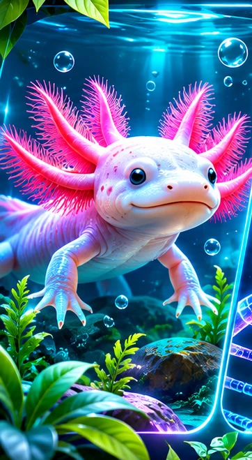
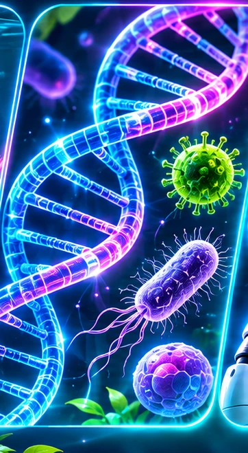
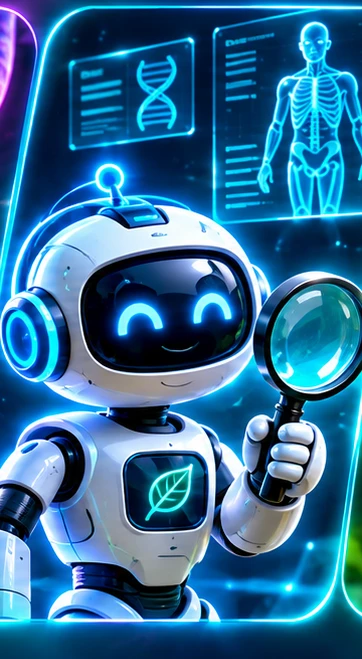
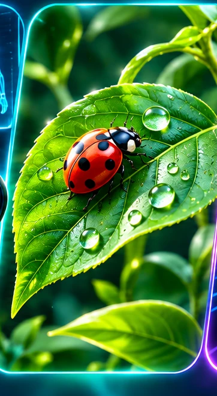
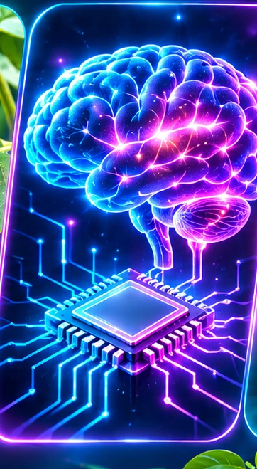
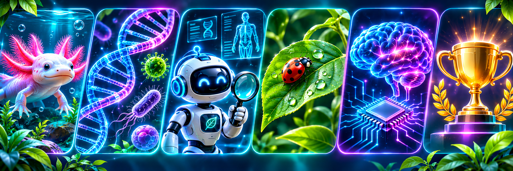

1. ИИ или реальность?ИИ или реальность?
Интерактивная битва по биологии • 7–9 классы

2. Факт или фейк?
3. Найди ошибку ИИ
4. Биодетектив
5. Человек против ИИ🧬 6 раундов
Реальность или вымысел, факт или фейк, ошибки ИИ, биологический детектив, задачи и финальная битва.
🏆 Рейтинг
Пока нет результатов.
🌍 Общие результаты
Демо-режим: данные только этого браузера.
Для синхронизации всех устройств настройте Firebase Authentication и Realtime Database.
